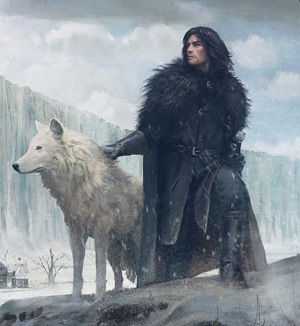

Most Vanilla Heroes in Pop Culture
As Black and White as this Site

Jon Snow with his Direwolf Ghost
Also Known As...
Click for a list of known Aliases
Most Controversial Moments
Plain Justice
Video evidence of his squareness

Jon Snow wielding Longclaw
Jon Snow
“Kill the boy, Jon Snow. Winter is almost upon us. Kill the boy and let the man be born.”- Maester Aemon to Jon
“The only time a man can be brave is when he is afraid.”
- Eddard Stark to Jon
“Never forget what you are, for surely the world will not. Make it your strength. Then it can never be your weakness. Armour yourself in it, and it will never be used to hurt you.”
- Tyrion Lannister to Jon
Why He's a Square
- He's always serious and or brooding.
- He only cares about respect, duty, honor, and family
- He was raised by Ned Stark
- He only wears black
- He's goodlooking enough to still be charming, despite a complete lack of unique personality traits
Heroic Achievements
Warning: This section contains spoilers for the Show Game of Thrones. If you are not caught up, proceed with caution!

Battle for Castle Black
Jon's herocisim began prior to the Battle when he entrenched himself behind enemy lines, feigning as a deserter who joined the Wildlings. Jon was secretly a double spy and brought back the information he garnered to his Night's Watch brothers.
Jon meets with Mance Rayder in his tent, where they discuss the battle and the Night's Watch's slim chances of victory. Jon tells Mance he must take his army and return home, while Mance reveals he sent 400 wildlings to scale the Wall five miles west of Castle Black, and demands the Watch open the gate or he will kill every black brother there. Shortly thereafter, horns and trumpets sound in the distance.
Hundreds of cavalrymen charge into the wildling camp carrying the flaming stag banners of House Baratheon of Dragonstone, led by Stannis Baratheon and Davos Seaworth. Because they were only expecting attacks from the Wall, the wildlings left their eastern flank totally undefended: they are taken by complete surprise while still in their own camp, many of them still resting from the fighting the night before.They panic and are quickly torn apart by Stannis's riders, who attack the camp from both sides in two large pincer formations, and catch the wildlings in a perfect double envelopment. Seeing his men being massacred in a one-sided fight, Mance gives the order to stand down, officially ending the wildlings' siege of Castle Black. Jon's leadership earned him the respect of his sworn brothers, who in return elected him Lord Commander of the Night's Watch.
Take back Winterfell
The Battle of the Bastards is a battle late in the War of the Five Kings in which Jon Snow and Sansa Stark retake Winterfell from Lord Ramsay Bolton, the Warden of the North, and restore House Stark as the ruling house of the North. Fought just outside of Winterfell, the Stark-led makeshift force of Free Folk and other minor Northern houses is on the verge of defeat when the knights of the Vale arrive in time to smash through the Bolton infantry on the rear. The battle ultimately culminates in Ramsay's death, the extinction of House Bolton and the restoration of House Stark as the rulers of the North, with Jon proclaimed as King by his vassals in the days after the battle. Following the deaths of Lord Harald Karstark and Lord Smalljon Umber during the battle, the Lordships of the Houses Karstark and Umber pass to Alys Karstark and Ned Umber, respectively, who are allowed to retain their lands and titles by the newly proclaimed King in the North.